import numpy as np
import pandas as pd
from matplotlib import pyplot as plt
%matplotlib inline
import seaborn as sns
sns.set_style('darkgrid')Classification Workbook
Welcome to the Classification workbook. Let’s start by importing some of our custom libraries.
1. Classification Algorithms
In the class, we discussed five different classification methods. Let’s investigate them in more detail here.
1.1. Binary Classification
Binary classification is when the target is determined with True or False. Let’s create a simple x and y arrays for exploring conditional classification.
x = np.linspace(0, 1, 100)np.random.seed(123)
noise = np.random.uniform(-0.2, 0.2, 100)y = ((x+noise)>0.5).astype(int)fig = plt.figure(figsize=(6,4))
ax = plt.subplot(111)
ax.plot(x, x>0.5, 'k--')
ax.scatter(x, y, color='b')<matplotlib.collections.PathCollection at 0x1316ae3a0>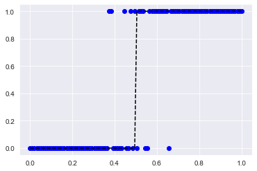
Simple as that, we built a mask that attributes values below 0.5 to 0 and above 0.5 to 1. When we use an encoder for a binary classification problem, we can use this type of classification easily.
1.2. Logistic Regression
We have used Logistic Regression before, but unlike the name implies LogisticRegression is best suited for classification problems.
from sklearn.linear_model import LogisticRegressionlr_model = LogisticRegression()lr_model.fit(x.reshape(100,1),y)LogisticRegression()lr_model.predict(x.reshape(100,1))array([0, 0, 0, 0, 0, 0, 0, 0, 0, 0, 0, 0, 0, 0, 0, 0, 0, 0, 0, 0, 0, 0,
0, 0, 0, 0, 0, 0, 0, 0, 0, 0, 0, 0, 0, 0, 0, 0, 0, 0, 0, 0, 0, 0,
0, 0, 0, 0, 0, 1, 1, 1, 1, 1, 1, 1, 1, 1, 1, 1, 1, 1, 1, 1, 1, 1,
1, 1, 1, 1, 1, 1, 1, 1, 1, 1, 1, 1, 1, 1, 1, 1, 1, 1, 1, 1, 1, 1,
1, 1, 1, 1, 1, 1, 1, 1, 1, 1, 1, 1])(lr_model.predict(x.reshape(100,1))==y)[:40]array([ True, True, True, True, True, True, True, True, True,
True, True, True, True, True, True, True, True, True,
True, True, True, True, True, True, True, True, True,
True, True, True, True, True, True, True, True, True,
True, False, False, True])This tells us model doesn’t always predict the values of y. Remember with LogisticRegression, it is always wise to look at the probability.
lr_model.predict_proba(x.reshape(100,1))[:40]array([[0.89531454, 0.10468546],
[0.89107222, 0.10892778],
[0.88667974, 0.11332026],
[0.88213356, 0.11786644],
[0.87743021, 0.12256979],
[0.87256629, 0.12743371],
[0.8675385 , 0.1324615 ],
[0.86234363, 0.13765637],
[0.85697862, 0.14302138],
[0.85144054, 0.14855946],
[0.84572661, 0.15427339],
[0.83983425, 0.16016575],
[0.83376108, 0.16623892],
[0.82750492, 0.17249508],
[0.82106385, 0.17893615],
[0.8144362 , 0.1855638 ],
[0.80762059, 0.19237941],
[0.80061592, 0.19938408],
[0.79342145, 0.20657855],
[0.78603676, 0.21396324],
[0.77846179, 0.22153821],
[0.77069688, 0.22930312],
[0.76274275, 0.23725725],
[0.75460057, 0.24539943],
[0.74627191, 0.25372809],
[0.73775882, 0.26224118],
[0.72906379, 0.27093621],
[0.72018981, 0.27981019],
[0.71114034, 0.28885966],
[0.70191933, 0.29808067],
[0.69253123, 0.30746877],
[0.682981 , 0.317019 ],
[0.67327408, 0.32672592],
[0.66341641, 0.33658359],
[0.65341443, 0.34658557],
[0.64327504, 0.35672496],
[0.63300563, 0.36699437],
[0.62261402, 0.37738598],
[0.61210848, 0.38789152],
[0.60149767, 0.39850233]])fig = plt.figure(figsize=(6,4))
ax = plt.subplot(111)
ax.scatter(x, y, color='b')
ax.plot(x, lr_model.predict_proba(x.reshape(100,1))[:,1], 'k--', label='Log. Reg.')
ax.legend()<matplotlib.legend.Legend at 0x13220c910>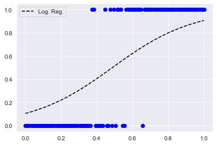
The probabilities are not as “certain”. Remember, we can always fine tune the logistic regression with C, penalty parameter.
1.3. Decision Tree and Random Forest Classification
This is also an old friend of ours. Let’s see how we can use RandomForest as a classifier.
from sklearn.ensemble import RandomForestClassifierrf_model = RandomForestClassifier(random_state=123)rf_model.fit(x.reshape(100,1),y)RandomForestClassifier(random_state=123)X = x.reshape(100,1)pred = rf_model.predict_proba(X)fig = plt.figure(figsize=(6,4))
ax = plt.subplot(111)
ax.scatter(x, y, color='b')
ax.plot(X, pred[:,1], 'k--', label='RF Classifier')
ax.legend()<matplotlib.legend.Legend at 0x1326dc8b0>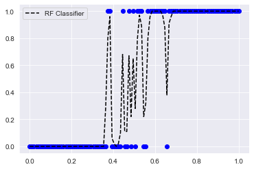
Not a great fit, but luckily we have learnt how to tune Random Forests.
rf_model2 = RandomForestClassifier(random_state=123, min_samples_leaf=20)rf_model2.fit(X,y)RandomForestClassifier(min_samples_leaf=20, random_state=123)pred2 = rf_model2.predict_proba(X)fig = plt.figure(figsize=(6,4))
ax = plt.subplot(111)
ax.scatter(x, y, color='b')
ax.plot(X, pred2[:,1], 'k--', label='Constrained RF Classifier')
ax.legend(loc=2)<matplotlib.legend.Legend at 0x1316ff430>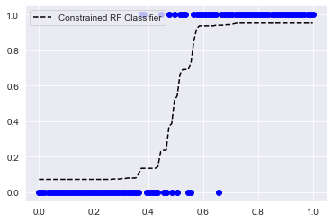
1.4. Naïve Bayesian Classification
from sklearn.naive_bayes import GaussianNBgnb = GaussianNB()gnb.fit(X,y)GaussianNB()pred3 = gnb.predict_proba(X)fig = plt.figure(figsize=(6,4))
ax = plt.subplot(111)
ax.scatter(x, y, color='b')
ax.plot(X, pred3[:,1], 'k--', label='Gaussian Naïve Bayes')
ax.legend(loc=2)<matplotlib.legend.Legend at 0x1327be0d0>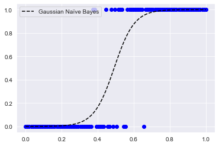
Worked seamlessly! Let’s see how it would perform in iris data.
from sklearn.model_selection import train_test_split
from sklearn.datasets import load_irisXi, yi = load_iris(return_X_y=True)X_train, X_test, y_train, y_test = train_test_split(Xi, yi, test_size=0.4, random_state=0)y_pred = gnb.fit(X_train, y_train).predict(X_test)y_test==y_predarray([ True, True, True, True, True, True, True, True, True,
True, False, True, True, True, True, True, True, True,
True, True, True, True, True, True, True, True, True,
True, True, True, True, True, True, True, True, True,
True, True, True, True, True, True, True, True, True,
True, True, True, False, True, True, True, True, True,
True, False, False, True, True, True])So the model did a pretty good job in identifying most of the test values.
1.5. k-Nearest Neighbour Classification
from sklearn.neighbors import KNeighborsClassifierknn_model = KNeighborsClassifier(n_neighbors=3)knn_model.fit(X,y)KNeighborsClassifier(n_neighbors=3)pred4 = knn_model.predict_proba(X)fig = plt.figure(figsize=(6,4))
ax = plt.subplot(111)
ax.scatter(x, y, color='b')
ax.plot(X, pred4[:,1], 'k--', label='kNN')
ax.legend(loc=2)<matplotlib.legend.Legend at 0x1329e2e50>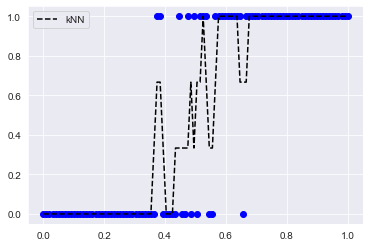
Again, we can finetune the kNN to get better results.
knn_model2 = KNeighborsClassifier(n_neighbors=5, weights='uniform')
knn_model2.fit(X,y)KNeighborsClassifier()pred5 = knn_model2.predict_proba(X)fig = plt.figure(figsize=(6,4))
ax = plt.subplot(111)
ax.scatter(x, y, color='b')
ax.plot(X, pred5[:,1], 'k--', label='kNN')
ax.legend(loc=2)<matplotlib.legend.Legend at 0x132a1c0a0>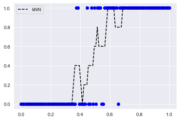
2. Evaluation Methods
Let’s remember what our x and y were.
print(X, y)[[0. ]
[0.01010101]
[0.02020202]
[0.03030303]
[0.04040404]
[0.05050505]
[0.06060606]
[0.07070707]
[0.08080808]
[0.09090909]
[0.1010101 ]
[0.11111111]
[0.12121212]
[0.13131313]
[0.14141414]
[0.15151515]
[0.16161616]
[0.17171717]
[0.18181818]
[0.19191919]
[0.2020202 ]
[0.21212121]
[0.22222222]
[0.23232323]
[0.24242424]
[0.25252525]
[0.26262626]
[0.27272727]
[0.28282828]
[0.29292929]
[0.3030303 ]
[0.31313131]
[0.32323232]
[0.33333333]
[0.34343434]
[0.35353535]
[0.36363636]
[0.37373737]
[0.38383838]
[0.39393939]
[0.4040404 ]
[0.41414141]
[0.42424242]
[0.43434343]
[0.44444444]
[0.45454545]
[0.46464646]
[0.47474747]
[0.48484848]
[0.49494949]
[0.50505051]
[0.51515152]
[0.52525253]
[0.53535354]
[0.54545455]
[0.55555556]
[0.56565657]
[0.57575758]
[0.58585859]
[0.5959596 ]
[0.60606061]
[0.61616162]
[0.62626263]
[0.63636364]
[0.64646465]
[0.65656566]
[0.66666667]
[0.67676768]
[0.68686869]
[0.6969697 ]
[0.70707071]
[0.71717172]
[0.72727273]
[0.73737374]
[0.74747475]
[0.75757576]
[0.76767677]
[0.77777778]
[0.78787879]
[0.7979798 ]
[0.80808081]
[0.81818182]
[0.82828283]
[0.83838384]
[0.84848485]
[0.85858586]
[0.86868687]
[0.87878788]
[0.88888889]
[0.8989899 ]
[0.90909091]
[0.91919192]
[0.92929293]
[0.93939394]
[0.94949495]
[0.95959596]
[0.96969697]
[0.97979798]
[0.98989899]
[1. ]] [0 0 0 0 0 0 0 0 0 0 0 0 0 0 0 0 0 0 0 0 0 0 0 0 0 0 0 0 0 0 0 0 0 0 0 0 0
1 1 0 0 0 0 0 1 0 0 1 0 1 0 1 1 1 0 0 1 1 1 1 1 1 1 1 1 0 1 1 1 1 1 1 1 1
1 1 1 1 1 1 1 1 1 1 1 1 1 1 1 1 1 1 1 1 1 1 1 1 1 1]2.1. Accuracy Score
We start with the simple accuracy score.
from sklearn.metrics import accuracy_scorepred = lr_model.predict(X)pred2 = rf_model.predict(X)pred3 = rf_model2.predict(X)pred4 = gnb.predict(X)pred5 = knn_model.predict(X)print( 'Logistic Reg. Acc:', accuracy_score(y, pred))
print( 'Random Forest Acc:', accuracy_score(y, pred2))
print( 'Constrained Random Forest Acc:', accuracy_score(y, pred3))
print( 'GNB Acc:', accuracy_score(y, pred4))
print( 'KNN Acc:', accuracy_score(y, pred5))Logistic Reg. Acc: 0.92
Random Forest Acc: 1.0
Constrained Random Forest Acc: 0.92
GNB Acc: 0.51
KNN Acc: 0.94This is what the metric says, but is something fishy?
2.2. Confusion Matrix
from sklearn.metrics import confusion_matrixprint('Log. Reg.:\n', confusion_matrix(y, pred))Log. Reg.:
[[45 4]
[ 4 47]]print('Random Forest:\n',confusion_matrix(y, pred2))Random Forest:
[[49 0]
[ 0 51]]print('Const. RF.:\n', confusion_matrix(y, pred3))Const. RF.:
[[45 4]
[ 4 47]]print('GNB:\n', confusion_matrix(y, pred4))GNB:
[[ 0 49]
[ 0 51]]print('KNN:\n', confusion_matrix(y, pred5))KNN:
[[46 3]
[ 3 48]]Okay, this is more revealing about the performance of the individual model.
2.3. Precision-Recall
Precision and recall is another way of assessing the performance of a model.
from sklearn.metrics import precision_recall_curveprint('Log. Reg.:\n', precision_recall_curve(y, pred))
print('Random Forest:\n',precision_recall_curve(y, pred2))
print('Const. RF.:\n', precision_recall_curve(y, pred3))
print('GNB:\n', precision_recall_curve(y, pred4))
print('KNN:\n', precision_recall_curve(y, pred5))Log. Reg.:
(array([0.51 , 0.92156863, 1. ]), array([1. , 0.92156863, 0. ]), array([0, 1]))
Random Forest:
(array([1., 1.]), array([1., 0.]), array([1]))
Const. RF.:
(array([0.51 , 0.92156863, 1. ]), array([1. , 0.92156863, 0. ]), array([0, 1]))
GNB:
(array([0.51, 1. ]), array([1., 0.]), array([1]))
KNN:
(array([0.51 , 0.94117647, 1. ]), array([1. , 0.94117647, 0. ]), array([0, 1]))Well, this didn’t explain much.
from sklearn.metrics import plot_precision_recall_curvedisp = plot_precision_recall_curve(lr_model, X, y)
disp.ax_.set_title('Log. Reg.')Text(0.5, 1.0, 'Log. Reg.')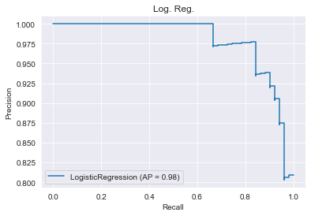
disp = plot_precision_recall_curve(rf_model, X, y)
disp.ax_.set_title('RF')Text(0.5, 1.0, 'RF')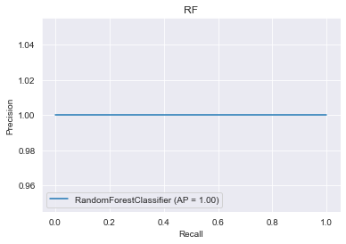
disp = plot_precision_recall_curve(rf_model2, X, y)
disp.ax_.set_title('Constrained RF')Text(0.5, 1.0, 'Constrained RF')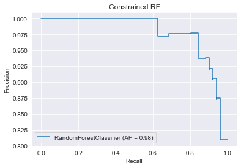
disp = plot_precision_recall_curve(knn_model, X, y)
disp.ax_.set_title('KNN')Text(0.5, 1.0, 'KNN')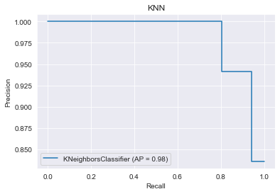
Now we know! Unconstrained Random Forest is overfitting.
2.4. ROC Curve
The last performance metric for classifications we wil learn in class today is the ROC curves. This is also very popular among data scientists.
from sklearn.metrics import roc_curve, roc_auc_score# Calculate ROC curve from y and predictions
fpr, tpr, thresholds = roc_curve(y, pred)
lr_df = pd.DataFrame({'FPR': fpr, 'TPR' : tpr, 'Thresholds' : thresholds})fpr, tpr, thresholds = roc_curve(y, pred2)
rf_df = pd.DataFrame({'FPR': fpr, 'TPR' : tpr, 'Thresholds' : thresholds})fpr, tpr, thresholds = roc_curve(y, pred3)
crf_df = pd.DataFrame({'FPR': fpr, 'TPR' : tpr, 'Thresholds' : thresholds})fpr, tpr, thresholds = roc_curve(y, pred4)
gnb_df = pd.DataFrame({'FPR': fpr, 'TPR' : tpr, 'Thresholds' : thresholds})fpr, tpr, thresholds = roc_curve(y, pred5)
knn_df = pd.DataFrame({'FPR': fpr, 'TPR' : tpr, 'Thresholds' : thresholds})lr_df.head()| FPR | TPR | Thresholds | |
|---|---|---|---|
| 0 | 0.000000 | 0.000000 | 2 |
| 1 | 0.081633 | 0.921569 | 1 |
| 2 | 1.000000 | 1.000000 | 0 |
fig = plt.figure(figsize=(8,6))
ax = plt.subplot(111)
ax.plot(lr_df.FPR, lr_df.TPR, color='darkorange',
linewidth=2, label='Log. Reg. AUROC = {:0.2f}'.format(roc_auc_score(y, pred)))
ax.plot(rf_df.FPR, rf_df.TPR, color='firebrick',
linewidth=2, label='RF AUROC = {:0.2f}'.format(roc_auc_score(y, pred2)))
ax.plot(crf_df.FPR, crf_df.TPR, color='forestgreen', linestyle='--',
linewidth=2, label='CRF AUROC = {:0.2f}'.format(roc_auc_score(y, pred3)))
ax.plot(gnb_df.FPR, gnb_df.TPR, color='pink',
linewidth=5, label='GNB AUROC = {:0.2f}'.format(roc_auc_score(y, pred4)))
ax.plot(knn_df.FPR, knn_df.TPR, color='navy',
linewidth=2, label='KNN AUROC = {:0.2f}'.format(roc_auc_score(y, pred5)))
ax.plot([0, 1], [0, 1], color='k', lw=2, linestyle='--')
ax.set_xlim([0.0, 1.0])
ax.set_ylim([0.0, 1.05])
ax.set_xlabel('False Positive Rate')
ax.set_ylabel('True Positive Rate')
plt.title('Receiver operating characteristic example')
ax.legend(loc="lower right")
plt.show()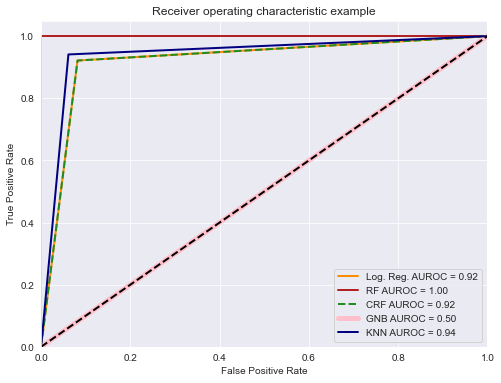
👏 Congratulations, you have completed the Classification Workbook!